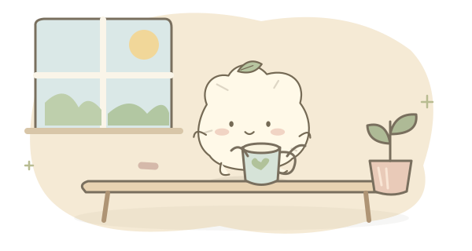

约 20 秒
先喝两口水
拿起手边的杯子，喝两口，再放回去。
两口就好，不用喝完。
不用介绍得很完整。留白，也是一种偏好。


拿起手边的杯子，喝两口，再放回去。
两口就好，不用喝完。
示例卡片 · 选一个时刻，看看适合那时的小动作。
按已保存的偏好试听，不占每天的次数。每次只给一个小动作，不打卡、不记录完成情况。平时会自己出现。
桌面上一直保留小场景，随时间变化。点一下拿到小动作，拖动可以挪位置；主动点击不占自动提醒次数。
不用先说清“哪里不够可爱”。比较轮廓、五官位置和表情，再把喜欢的版本用到桌面。
先保存档案，再复制提示词到你选择的 AI。检查生成的 100 条 JSON 后导入。应用本身不联网、不保存 API 密钥。